Python in a container
In this tutorial, you will learn how to:
- Create a
Dockerfilefile describing a simple Python container. - Build, run, and verify the functionality of a Django, Flask, or General Python app.
- Debug the app running in a container.
Prerequisites
-
Install Docker on your machine and add it to the system path.
-
On Linux, you should also enable Docker CLI for the non-root user account that will be used to run VS Code.
-
The Docker extension. To install the extension, open the Extensions view (⇧⌘X (Windows, Linux Ctrl+Shift+X)), search for
dockerto filter results and select Docker extension authored by Microsoft.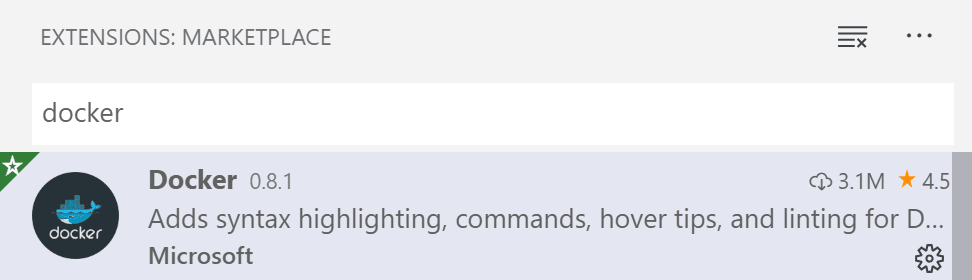
Create a Python project
If you don't have a Python project already, follow the tutorial Getting started with Python.
Note: If you want to containerize a complete Django or Flask web app, you can start with one of the following samples:
python-sample-vscode-django-tutorial, which is the result of following the Django Tutorial
python-sample-vscode-flask-tutorial, which is the result of following the Flask Tutorial
Note: For this tutorial, be sure to use the tutorial branch of the sample repos.
After verifying your app runs properly, you can now containerize your application.
Add Docker files to the project
-
Open the project folder in VS Code.
-
Open the Command Palette (⇧⌘P (Windows, Linux Ctrl+Shift+P)) and choose Docker: Add Docker Files to Workspace...:
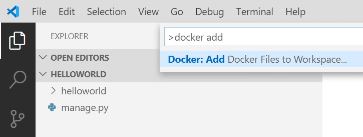
-
When prompted for the app type, select Python: Django, Python: Flask, or Python: General as the app type. For this tutorial, we'll focus on the Python: General case, but will also include notes for Django and Flask.
-
Enter the relative path to the app's entry point. This excludes the workspace folder you start from. If you created a python app with
hello.pyaccording to the Getting Started with Python tutorial, choose that.Django: Choose
manage.py(root folder) orsubfolder_name/manage.py. See the official Django documentation.Flask: Choose the path to where you create your Flask instance. See the official Flask documentation.
Tip: You may also enter the path to a folder name as long as this folder includes a
__main__.pyfile. -
Select the port number. We recommend selecting port 1024 or above to mitigate security concerns from running as a root user. Any unused will port, but Django and Flask use standard default ports.
Django: The default port 8000.
Flask: The default port is 5000.
-
When prompted to include Docker Compose, select No if you do not want a Docker Compose file. If you select Yes, you will need to verify the path to your
wsgi.pyfile in theDockerfileto run the Compose Up command successfully. Compose is typically used when running multiple containers at once. -
With all this information, the Docker extension creates the following files:
-
A
Dockerfile. To learn more about IntelliSense in this file, refer to the overview. -
A
.dockerignorefile to reduce the image size by excluding files and folders that aren't needed such as.git,.vscode, and__pycache__. -
If you're using Docker Compose, a
docker-compose.ymlanddocker-compose.debug.ymlfile. -
If one does not already exist, a
requirements.txtfile for capturing all app dependencies.
Important Note: To use our setup, the Python framework (Django/Flask) and Gunicorn must be included in the
requirements.txtfile. If the virtual environment/host machine already has these prerequisites installed and is supposed to be identical to the container environment, ensure app dependencies are ported over by runningpip freeze > requirements.txtin the terminal. This will overwrite your currentrequirements.txtfile. -
(Optional) Add an environment variable to the image
This step is not required, but it is included to help you understand how to add environment variables that need to be set in the container's environment.
The Docker Extension helps you author Dockerfiles by using IntelliSense to provide auto-completions and contextual help. To see this feature in action:
-
Open the
Dockerfile. -
Underneath the
EXPOSEstatement, type ⌃Space (Windows, Linux Ctrl+Space) to trigger IntelliSense and scroll toENV.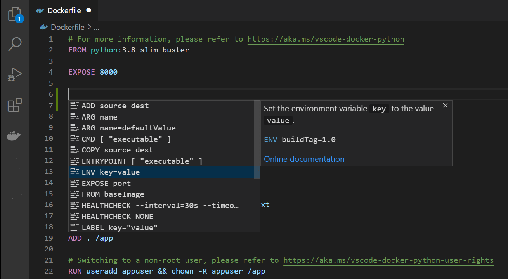
-
Press Tab or Enter to complete the statement, then set the
keyto the name of the variable, and set thevalue.
For more information about setting and using environment variables in the Dockerfile, see the ENV instruction and Environment replacement section in the Docker documentation.
Gunicorn modifications for Django and Flask apps
To give Python web developers a great starting point, we chose to use Gunicorn as the default web server. Since it is referenced in the default Dockerfile, it is included as a dependency in the requirements.txt file. If you don't see it in requirements.txt, run pip install gunicorn and then run pip freeze > requirements.txt to regenerate the requirements.txt file.
-
Django: To use Gunicorn, it must bind to an application callable (what the application server uses to communicate with your code) as an entry point. This callable is declared in the
wsgi.pyfile of a Django application. To accomplish this binding, the final line in the Dockerfile says:CMD ["gunicorn", "--bind", "0.0.0.0:8000", "{workspace_folder_name}.wsgi"]If your project does not follow Django's default project structure (that is, a workspace folder and a wsgi.py file >within a subfolder named the same as the workspace) you must overwrite the Gunicorn entry point in the Dockerfile to locate the correct
wsgi.pyfile.If your
wsgi.pyfile is in the root folder, the final argument in the command above will be"wsgi". Within subfolders, the argument would be"subfolder1_name.subfolder2_name.wsgi". -
Flask: To use Gunicorn, it must bind to an application callable (what the application server uses to communicate with your code) as an entry point. This callable corresponds with the file location and variable name of your created Flask instance. According to official Flask Documentation, users generally create a Flask instance in the main module or in the
__init__.pyfile of their package in this manner:from flask import Flask app = Flask(__name__) # Flask instance named appTo accomplish this binding, the final line in the Dockerfile says:
CMD ["gunicorn", "--bind", "0.0.0.0:5000", "{subfolder}.{module_file}:app"]During the Docker: Add Docker Files to Workspace... command, you configure the path to the Flask instance, however, the Docker extension assumes your Flask instance variable is named
app. If this is not the case, you must change the variable name in the Dockerfile.If your main module was in the root folder as a file named
main.pyand had a Flask instance variable was namedmyapp, the final argument in the command above will be"main:myapp". Within subfolders, the argument would be"subfolder1_name.subfolder2_name.main:myapp".
Build, run, and debug the container
The Docker: Add Docker Files to Workspace... command automatically creates a Docker launch configuration to build and run your container in debug mode. To debug your Python app container:
-
Navigate to the file that contains your app's startup code, and set a breakpoint.
-
Navigate to Run and Debug and select Docker: Python - General, Docker: Python - Django, or Docker: Python - Flask, as appropriate.
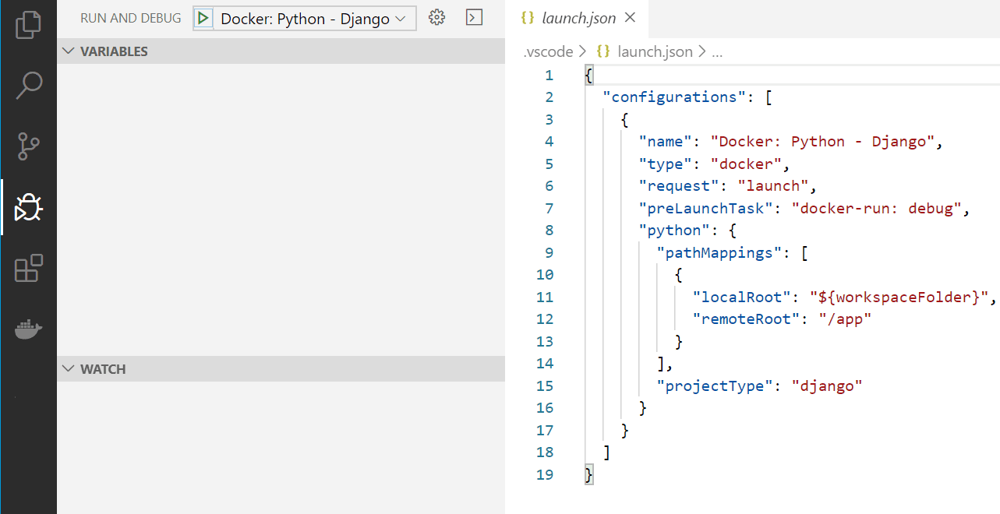
-
Start debugging using the F5 key.
- The Docker image builds.
- The Docker container runs.
- The python debugger stops at the breakpoint.
-
Step over this line once.
-
When ready, press continue.
The Docker extension will launch your browser to a randomly mapped port:
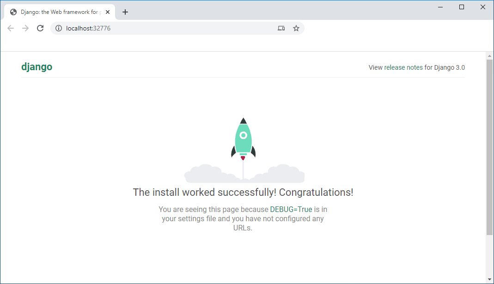
Tip: To modify your Docker build settings, such as changing the image tag, navigate to
.vscode -> tasks.jsonunder thedockerBuildattribute in thedocker-buildtask. Use IntelliSense within the file (⌃Space (Windows, Linux Ctrl+Space)) to display all other valid directives.
Use the Docker Explorer
The Docker Explorer provides an interactive experience to examine and manage Docker assets such as containers, images, and so on. To see an example:
-
Navigate to the Docker Explorer.
-
In the Containers tab, right-click on your container and choose View Logs.
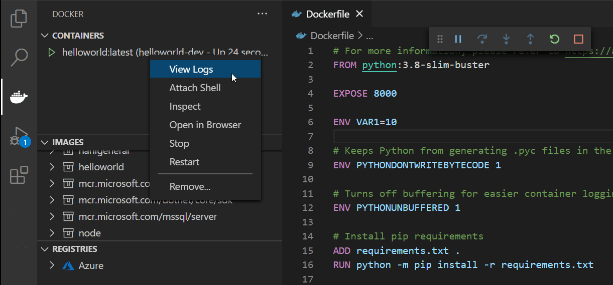
-
The output will be displayed in the terminal.
Build the image in Azure
You can use the command Azure Container Registry: Build Image in Azure to build an image that you can then deploy to Azure App Service.
-
Install the Azure account extension. Open the Command Palette (⇧⌘P (Windows, Linux Ctrl+Shift+P)) and search for the command Azure: Sign In. If you don't have an Azure account, you can sign up for a free trial.
-
There are two ways to invoke the build in Azure command. You can right-click on the Dockerfile, and choose Build Image in Azure. You can also use the Command Palette (⇧⌘P (Windows, Linux Ctrl+Shift+P)) and search for the command Azure Container Registry: Build Image in Azure.
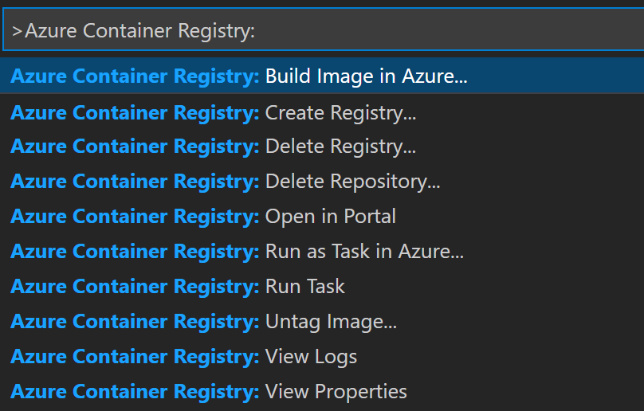
-
Choose the name and tag for the built image. You'll use this to identify it in the container registry.
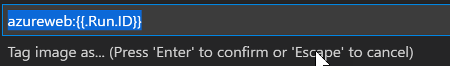
-
Choose the Azure subscription you want to use.
-
Choose an existing Azure Container Registry, or create a new one. When you create a new one, you're asked to provide the name, resource group, location, and an option for pricing, such as Basic, Standard, or Premium. You can read about the costs of these options at Pricing - Container Registry.
-
Specify the base OS, Linux or Windows. This choice must be consistent with the Dockerfile.
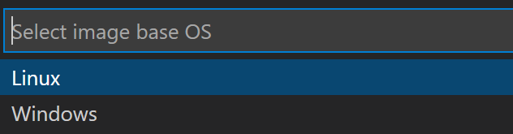
The process of building the image might take a few minutes. You can track progress in the terminal. If you encounter an error (Error: failed to download context.), try using the Refresh option on the container registry and then request another build. Before rebuilding, manually delete the old image.
Deploy to Azure App Service
Once the container image is built, it should appear in the Container Registry with the tag you specified. Now that it's built, you can deploy it to Azure App Service. You don't need to install the Azure App Service extension to get started, although it might be useful for managing the app service. You can install it from Azure App Service, but we recommend you install the Azure Tools extension pack, which includes a package of tools for a wide range of Azure development scenarios.
-
Right-click on the image tag and choose Deploy Image to to Azure App Service.
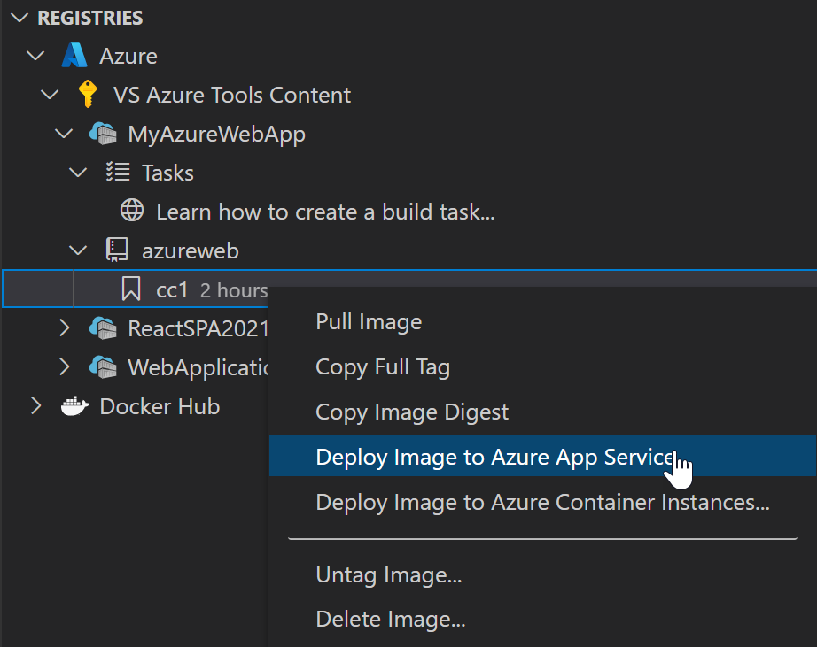
-
Provide the name of the web site. This must be a unique name, and for Django apps, it must also be listed as a valid host name in the
ALLOWED_HOSTSlist in thesettings.pyfile. -
Provide a resource group, location, and App Service Plan. If you're just getting started, you can choose the free plan.
-
The image is deployed; the process might take a few minutes. Once it's deployed, a notification appears with a button you can use to access the site. You can also use the site's address,
{appname}.azurewebsites.netwhere{appname}is the name you gave when creating it. If it doesn't work at first, try again in a few minutes. It's not uncommon for the first few attempts to time out or return an error. It just means the App Service isn't ready yet to receive requests. -
Make a small change in the application code that's visible on one of the pages, and save the file.
-
Use the Azure icon to open the Resources view, and expand the node for your subscription to find the App Service that you deployed in the previous step.
-
Right-click on the App Service node and look at the available options. Choose Deploy to Web App, and then specify your app folder to deploy it.
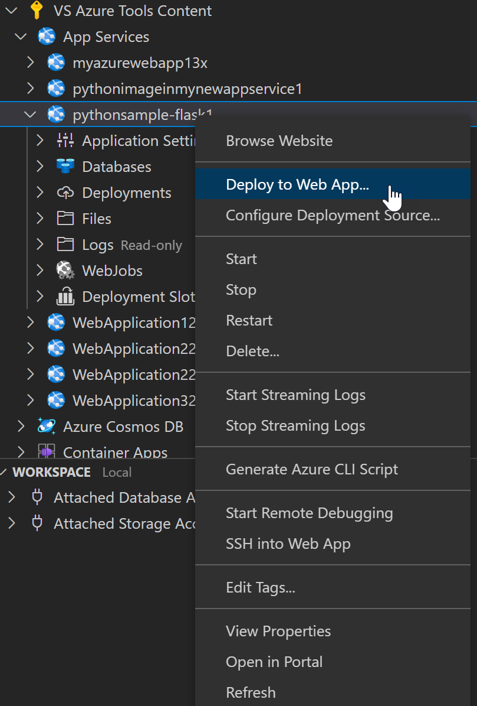
When warned that this will overwrite the previous deployment, choose Deploy to confirm.
This might take a few minutes; you can monitor progress in the terminal window. When it finishes, a button with access to the site is given.
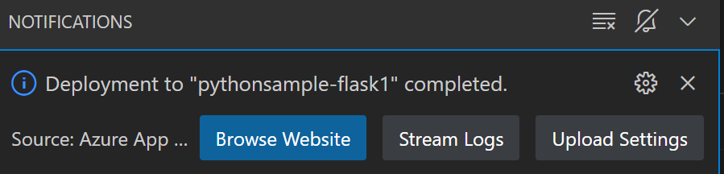
Use the button and verify that your change is reflected on the site.
Congratulations, you've used Python in VS Code to create an deploy a web site that's hosted in the cloud and live on the internet!
Free up resources
In the Azure portal, delete the Resource Group to free up all resources that you created during this exercise.
Next steps
You're done! Now that your container is ready, you may want to: